Solution:
Pivot matrix:
Multiplying the original tableau T0 by the pivot matrix:

- (a)
- (5 points) We are given a linear program
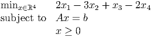 The optimal tableau for the artificial problem for this LP is
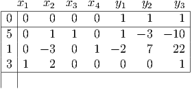 where y1, y2, and y3 are the artificial variables. Find a canonical form tableau for the original LP.
Solution:
All the artificial variables are nonbasic at the optimal solution to the artificial problem, so we can just delete the artificial columns, restore the original objective function, and pivot to get a canonical form tableau:

- (b)
- (10 points) We are given a linear program

The optimal tableau for the artificial problem for this LP is
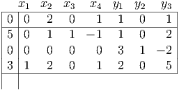 where y1, y2, and y3 are the artificial variables. Find a canonical form tableau for the original LP.
Solution:
The artificial variable y2 is basic, but zero. All the aij coefficients in the row corresponding to the basic variable y2 (namely, the second constraint) are zero. Therefore, we can just delete the artificial columns, delete the second constraint (since it is redundant), restore the original objective function, and pivot to get a canonical form tableau:
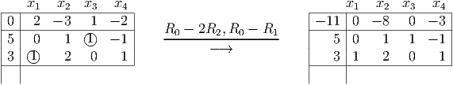 - (c)
- (10 points) We are given a linear program
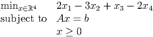 The optimal tableau for the artificial problem for this LP is
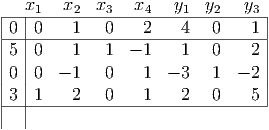 where y1, y2, and y3 are the artificial variables. Find a canonical form tableau for the original LP.
Solution:
The artificial variable y2 is zero but basic. We delete the artificial variables, pivot somewhere nonzero in the second constraint, restore the original objective function, and pivot to get a canonical form tableau:

- (a)
- (10 points) Solve this problem graphically. Show that the set of optimal solutions is unbounded. What is the optimal value?
- (b)
- (5 points) Perform one simplex pivot starting from the basic feasible solution = (4, 0, 6, 0). Show that the resulting basic feasible solution is optimal.
- (c)
- (10 points) Use the updated tableau to find a feasible solution x* and a direction d ∈ ℝ4 so that the set
of optimal solutions can be written
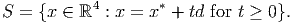 - (d)
- (5 points) Give an optimal solution with x4 = 2.
Solution:
- (a)
-
 Optimal value is z = -6.
Optimal value is z = -6.
- (b)
-
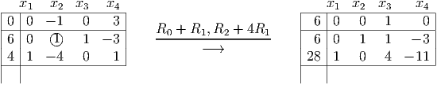 - (c)
- The point x* is the optimal solution x* = (28, 6, 0, 0). The direction d = (11, 3, 0, 1) is the
simplex direction when we try to add x4 into the basis, since the reduced cost c4 = 0. We
get
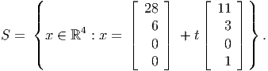 - (d)
- If x ∈ S and x4 = 2 then we must have t = 2, so we get the point x = (50, 12, 0, 2).
- (a)
- (15 points) Let a1,…,am be vectors in ℝn and let b
1,…,bm be scalars. Formulate the following
optimization problem as an equivalent standard form linear program.
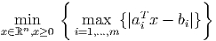 (In words, we are trying to find the point x ∈ ℝn which minimizes the maximum violation of any of the constraints aiT x = b i, i = 1,…,m.)
Solution:
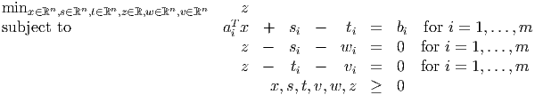 - (b)
- (10 points) Assume m > n and the optimal value of the optimization problem is zero. Show that any
optimal solution to your standard form LP must be degenerate.
Solution:
Let (x*,s*,t*,v*,w*,z*) be an optimal solution. If the optimal value is z* = 0 then we must have si* = t i* = v i* = w i* = 0 for all i = 1,…,n. Thus, we have at most n strictly positive components, namely the components of x*. Thus, we must have at least m - n > 0 basic variables which are equal to zero, so we have a degenerate solution.